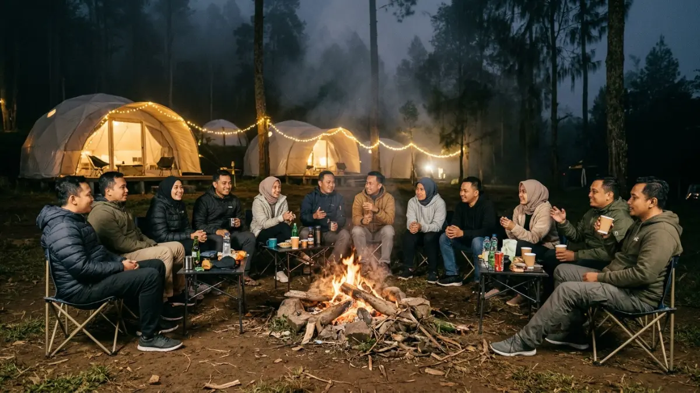

Ilustrasi: Susunan jadwal dan rundown acara glamping meeting
outdoor yang terencana dan terstruktur.
Ilustrasi: Susunan jadwal dan rundown acara glamping meeting
outdoor yang terencana dan terstruktur.
Rundown glamping meeting outdoor yang efektif membagi waktu antara sesi kerja pagi, aktivitas tim sore, dan acara santai malam, dengan jeda cukup agar peserta tetap fokus.
- Rundown dua hari satu malam adalah format paling umum untuk meeting outdoor.
- Sesi kerja berat sebaiknya ditempatkan pada pagi hari, saat energi dan fokus peserta paling baik.
- Aktivitas tim dan api unggun menguatkan hubungan, tetapi tidak boleh menghabiskan seluruh waktu acara.
- Rencana cadangan hujan harus disiapkan agar jadwal tetap berjalan.
- Evaluasi singkat di akhir acara membantu mengubah diskusi menjadi tindak lanjut.
- Seperti Apa Contoh Rundown Glamping Meeting Outdoor 2 Hari 1 Malam?
- Bagaimana Menyusun Porsi Sesi Kerja dan Aktivitas agar Seimbang?
- Aktivitas Penguatan Tim yang Cocok untuk Glamping Meeting Outdoor
- Bagaimana Mengatur Sesi Meeting Agar Peserta Tetap Fokus di Luar Ruangan?
- Apa Rencana Cadangan Jika Hujan atau Cuaca Buruk?
- Peran Fasilitator dan Panitia dalam Menjaga Jalannya Rundown
- Bagaimana Mengevaluasi Hasil Glamping Meeting Outdoor Setelah Acara Selesai?
- Kesimpulan
- FAQ
Seperti Apa Contoh Rundown Glamping Meeting Outdoor 2 Hari 1 Malam?
Contoh rundown dua hari satu malam dimulai dengan kedatangan dan sesi pembukaan, dilanjutkan sesi kerja, aktivitas tim, makan malam dan acara santai, lalu sesi penutup dan evaluasi pada hari kedua.
Berikut kerangka yang dapat disesuaikan dengan tujuan acara:
Hari pertama
- 09.00 - 10.00: Kedatangan, registrasi, dan pembagian tenda
- 10.00 - 10.30: Pembukaan dan penjelasan tujuan acara
- 10.30 - 12.00: Sesi kerja pertama, misalnya pemaparan evaluasi
- 12.00 - 13.30: Makan siang dan istirahat
- 13.30 - 15.30: Sesi diskusi kelompok
- 15.30 - 17.30: Aktivitas tim di area terbuka
- 18.00 - 19.30: Makan malam
- 19.30 - 22.00: Api unggun, diskusi santai, atau permainan kelompok
Hari kedua
- 06.00 - 07.30: Aktivitas ringan pagi dan sarapan
- 08.00 - 10.30: Sesi kerja penentuan keputusan dan rencana tindak lanjut
- 10.30 - 11.30: Evaluasi dan penutupan
- 11.30 - 13.00: Makan siang dan kepulangan
Kerangka ini dapat diperpendek menjadi satu hari atau diperpanjang menjadi tiga hari sesuai kebutuhan. Gambaran umum mengenai format acara serta manfaat dan batasannya tersedia pada panduan glamping meeting outdoor secara menyeluruh.
Bagaimana Menyusun Porsi Sesi Kerja dan Aktivitas agar Seimbang?
Porsi seimbang umumnya menempatkan sesi kerja sebagai inti pada pagi hari, lalu aktivitas dan waktu santai pada sore dan malam, dengan jeda singkat setiap satu sampai dua jam.
Terlalu banyak sesi kerja menghilangkan alasan memilih lokasi outdoor, sedangkan terlalu banyak aktivitas membuat tujuan rapat tidak tercapai.
Gunakan prinsip sederhana: tentukan hasil yang harus dicapai, hitung waktu sesi kerja yang dibutuhkan, lalu isi sisanya dengan aktivitas yang mendukung tujuan tersebut.
Beri jeda sepuluh sampai lima belas menit setiap satu sampai dua jam agar peserta dapat bergerak, minum, dan beristirahat. Jeda ini juga membantu peserta tetap segar saat membahas keputusan penting.
Sisakan waktu longgar untuk perpindahan antarlokasi karena berjalan di area outdoor sering memakan waktu lebih lama dari perkiraan.
Pertimbangkan karakter peserta. Tim yang baru saling mengenal membutuhkan lebih banyak aktivitas pencair suasana, sementara tim yang sudah solid dapat mengalokasikan lebih banyak waktu untuk sesi strategi.
Aktivitas Penguatan Tim yang Cocok untuk Glamping Meeting Outdoor

Ilustrasi: Sesi santai dan kebersamaan tim di sekitar api unggun glamping outdoor pada malam hari.Aktivitas yang cocok adalah permainan kelompok sederhana, pemecahan masalah bersama, diskusi di api unggun, jalan pagi, dan kegiatan kreatif yang mudah diikuti semua peserta.
Pilih aktivitas yang selaras dengan tujuan acara. Untuk meningkatkan komunikasi, permainan kelompok yang menuntut pembagian peran dan koordinasi dapat dipakai.
Untuk memperkuat kepercayaan antaranggota, aktivitas pemecahan masalah bersama lebih relevan. Api unggun cocok untuk sesi refleksi santai karena suasananya mendorong peserta berbicara lebih terbuka.
Pertimbangkan keselamatan dan kondisi fisik peserta. Aktivitas fisik berat tidak cocok bagi semua orang, sehingga sediakan alternatif yang lebih ringan.
Pastikan ada pendamping dan perlengkapan keselamatan bila kegiatan dilakukan di area dengan medan tertentu.
Permintaan terhadap kegiatan semacam ini terlihat pada industri acara. Indonesia Outing and Incentive Travel Expo 2026 digelar di NICE PIK 2 pada 9 sampai 11 Oktober 2026 untuk mempertemukan perusahaan dengan penyedia layanan outing, gathering, dan team building, menurut Kontan. Hal ini menunjukkan kebutuhan korporasi akan kegiatan kebersamaan tetap ada.
Bagaimana Mengatur Sesi Meeting Agar Peserta Tetap Fokus di Luar Ruangan?
Fokus dijaga dengan membatasi durasi sesi, menetapkan agenda tertulis, mengatur tata ruang yang nyaman, menyediakan air dan kudapan, serta menunjuk fasilitator untuk mengendalikan waktu dan arah diskusi.
Batasi sesi menjadi sembilan puluh menit atau kurang. Setelah itu, beri jeda agar konsentrasi pulih. Bagikan agenda tertulis sebelum acara sehingga peserta tahu tujuan setiap sesi dan dapat mempersiapkan diri.
Atur tata ruang tenda agar semua peserta dapat melihat layar dan mendengar pembicara. Gunakan formasi kelompok kecil untuk diskusi interaktif, dan formasi kelas untuk pemaparan. Pastikan suhu nyaman dan pencahayaan cukup, karena tenda dapat terasa panas saat siang dan dingin saat malam.
Terakhir, atur aturan penggunaan ponsel selama sesi inti. Peserta yang sibuk menjawab pesan akan mengurangi kualitas diskusi. Fasilitator yang tegas namun ramah membantu menjaga diskusi tetap terarah.
Pemilihan lokasi dengan fasilitas teknis yang andal juga mendukung hal ini, sebagaimana dibahas pada cara memilih glamping meeting outdoor yang tepat.
Apa Rencana Cadangan Jika Hujan atau Cuaca Buruk?
Rencana cadangan hujan mencakup area meeting tertutup, jadwal alternatif yang memindahkan aktivitas luar ke dalam ruangan, serta kesiapan perlengkapan seperti jas hujan, penerangan, dan jalur aman.
Tanyakan kepada pengelola apakah tersedia area tertutup yang dapat dipakai bila tenda meeting utama tidak memungkinkan. Siapkan dua versi rundown: versi cuaca cerah dan versi hujan.
Pada versi hujan, aktivitas luar ruang diganti dengan permainan di dalam tenda, diskusi kelompok, atau sesi kreatif yang tidak membutuhkan area terbuka.
Pantau prakiraan cuaca satu hingga dua hari sebelum acara dan sampaikan kepada peserta agar membawa perlengkapan yang sesuai. Siapkan juga lampu senter, jas hujan, dan alas kaki tertutup untuk menjaga keselamatan peserta di jalur licin.
Tentukan siapa yang berwenang memutuskan perubahan jadwal. Keputusan yang cepat dan jelas akan mencegah kebingungan. Komunikasikan perubahan melalui grup pesan agar semua peserta mengetahui jadwal terbaru.
Peran Fasilitator dan Panitia dalam Menjaga Jalannya Rundown
Fasilitator menjaga alur dan kualitas diskusi, sedangkan panitia menangani logistik, konsumsi, transportasi, dan komunikasi sehingga rundown berjalan sesuai waktu dan peserta merasa terlayani.
Bagi tugas panitia sejak awal. Satu orang menangani registrasi dan akomodasi, satu orang mengurus konsumsi dan perlengkapan, satu orang mengawasi waktu, dan satu orang berhubungan dengan pengelola lokasi. Pembagian peran yang jelas mencegah tumpang tindih tanggung jawab.
Fasilitator sebaiknya memahami tujuan acara dan mampu mengelola dinamika kelompok. Ia bertugas memastikan semua peserta mendapat kesempatan berbicara, menjaga diskusi tetap relevan, dan merangkum poin penting di setiap sesi.
Kesiapan ini juga dapat dikaitkan dengan estimasi anggaran, sebagaimana diuraikan pada pembahasan tentang biaya glamping meeting outdoor.
Bagaimana Mengevaluasi Hasil Glamping Meeting Outdoor Setelah Acara Selesai?
Evaluasi dilakukan melalui pembahasan singkat di akhir acara, kuesioner peserta, pencatatan keputusan dan penanggung jawab, serta pemeriksaan pencapaian tujuan dalam beberapa minggu setelah acara.
Gunakan sesi penutup untuk merangkum keputusan utama, menetapkan penanggung jawab, dan menentukan tenggat tindak lanjut.
Catatan ini harus dibagikan kepada seluruh peserta dalam satu hingga dua hari. Semakin cepat tindak lanjut dikirim, semakin besar peluang keputusan dijalankan.
Bagikan kuesioner singkat tentang kualitas materi, kenyamanan fasilitas, konsumsi, dan aktivitas. Pertanyaan terbuka memberi masukan konkret untuk acara berikutnya.
Evaluasi juga dapat mencakup biaya dibanding manfaat agar pimpinan memperoleh gambaran kelayakan.
Pada dasarnya, perjalanan wisata domestik masih tinggi. Terdapat 106 juta perjalanan wisatawan nusantara pada Mei 2026, menurut Kontan.
Dengan evaluasi yang baik, perusahaan dapat memastikan acara kelompok benar-benar menghasilkan dampak, bukan sekadar perjalanan.
Kesimpulan
Rundown yang efektif menempatkan sesi kerja berat pada pagi hari, menyeimbangkan aktivitas tim, menyiapkan rencana hujan, dan menutup dengan evaluasi yang menghasilkan tindak lanjut.
Gunakan kerangka dua hari satu malam sebagai titik awal, lalu sesuaikan dengan tujuan dan karakter tim Anda.
Pertanyaan yang Sering Diajukan (FAQ)